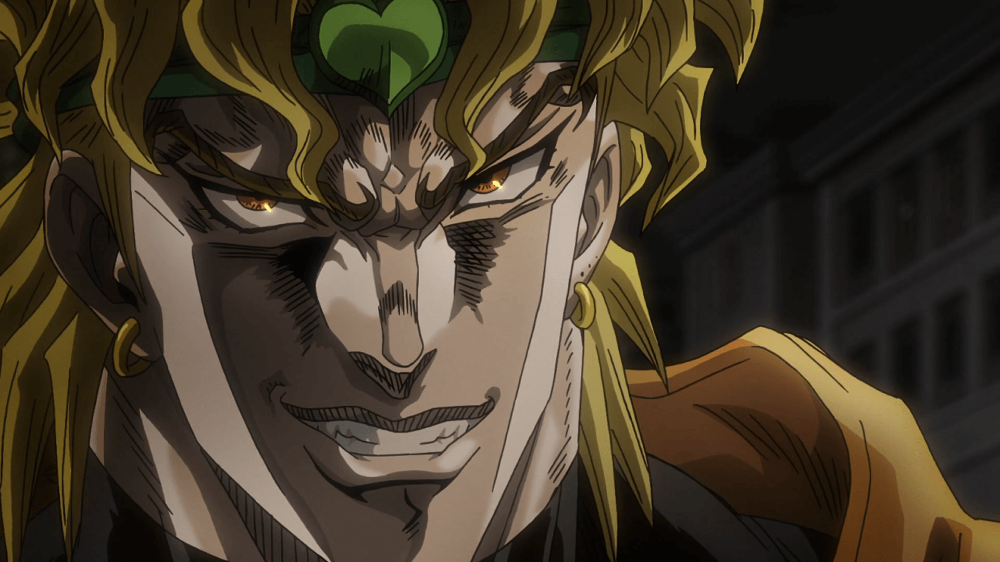

Sobre Dio Brando
Dio é aparentemente calmo, inteligente, bem-educado, observador e de muita classe a primeira vista; mas com o tempo ele se mostra uma pessoa extremamente falsa e traiçoeira. Revelando ser uma pessoa extremamente dissimulada. A natureza traiçoeira, sádica de Dio Brando pode ser explicada parcialmente pela educação abusiva que ele teve com Dario Brando: um pai alcoólico quem ele matou depois de envenená-lo por um longo tempo. Ele também é ambicioso, narcisista, arrogante e megalomaníaco. Ele fará qualquer coisa que puder para conseguir aquilo que quer, até mesmo pisar em cima de qualquer pessoa, como ele fez a Jonathan Joestar quando eles eram jovens: renunciando a humanidade dele a favor de se tornar um vampiro. Porém, Dio não é completamente mau. Ele mostra um lado bom as pessoas que são boas e leais a ele. Em particular, ele mostrou atitudes favoráveis para com Vanilla Ice e Enrico Pucci, que também demonstraram lealdade em troca. Dio também tem uma paixão por ler, como foi mostrado durante a série 3, em sua biblioteca no Egito, e também nos Games onde "Shadow Dio" (nome dado a uma forma alternativa, baseada na aparência de Dio nesta parte antes de ser totalmente revelado) lê um livro e toma um pouco de vinho quando ganha a luta.

Dio sendo mal no seu dia a dia